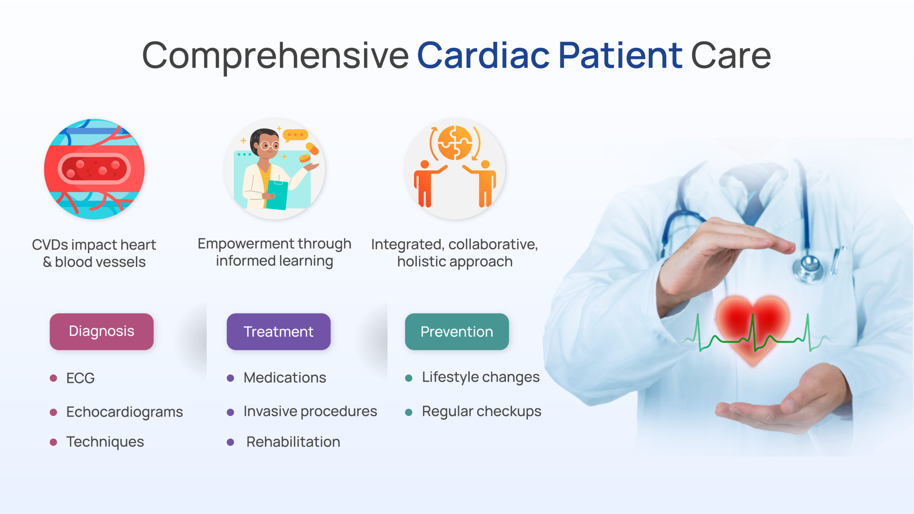
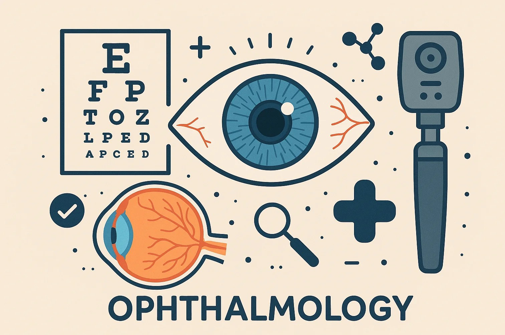
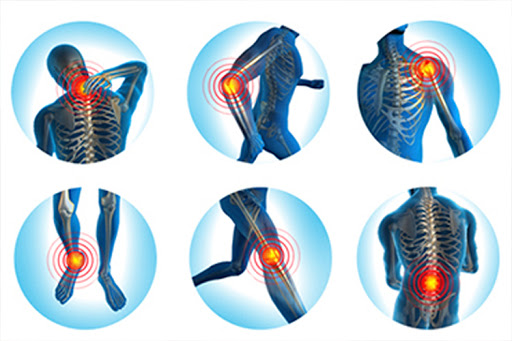
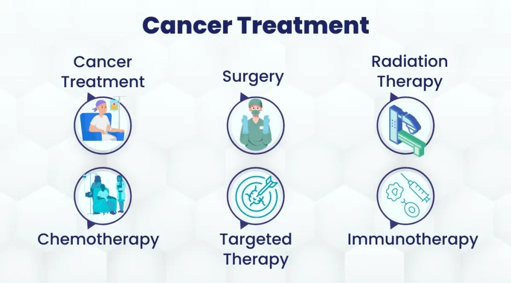

Advanced care across major medical specialties with trusted hospitals

Mumbai offers world-class cardiac treatment with experienced cardiologists and advanced surgical technology.
Ideal for: Heart blockages, chest pain, valve disorders
Recovery: 1–4 weeks depending on procedure
Get Consultation
Comprehensive eye care with modern laser technology and experienced specialists.
Ideal for: Vision correction, cataract, retinal issues
Recovery: 1–7 days
Get Consultation
Advanced orthopedic procedures for joint replacement, sports injuries, and spine care.
Ideal for: Joint pain, mobility issues, injuries
Recovery: 2–6 weeks
Get Consultation
Comprehensive cancer treatment including surgery, chemotherapy, and radiation therapy.
Ideal for: Early and advanced cancer treatment
Recovery: Depends on treatment plan
Get ConsultationContact us to get guidance for these treatments and connect with the right specialist in Mumbai.